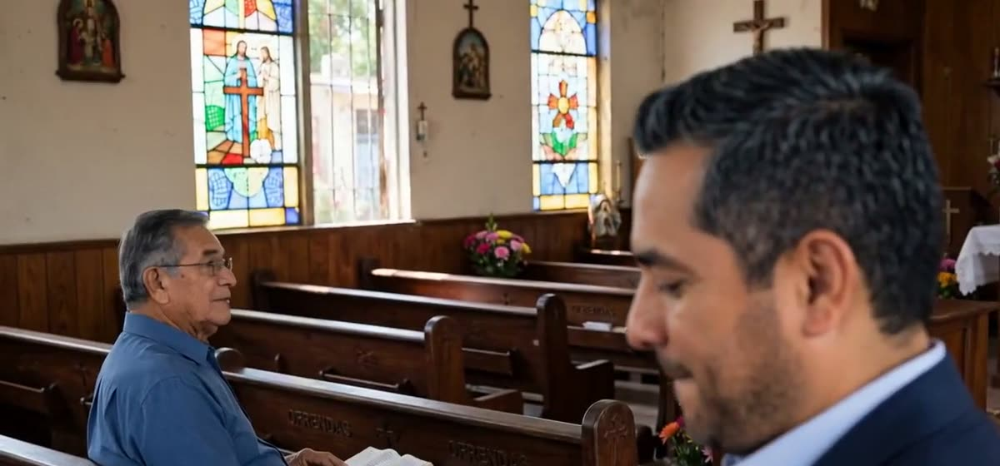
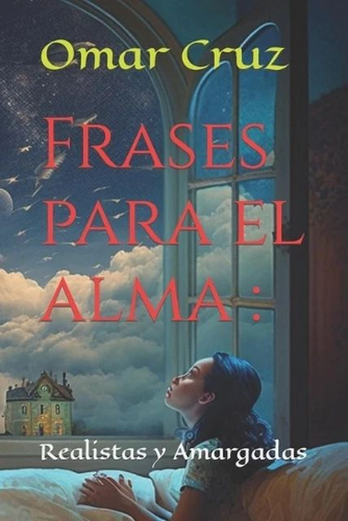
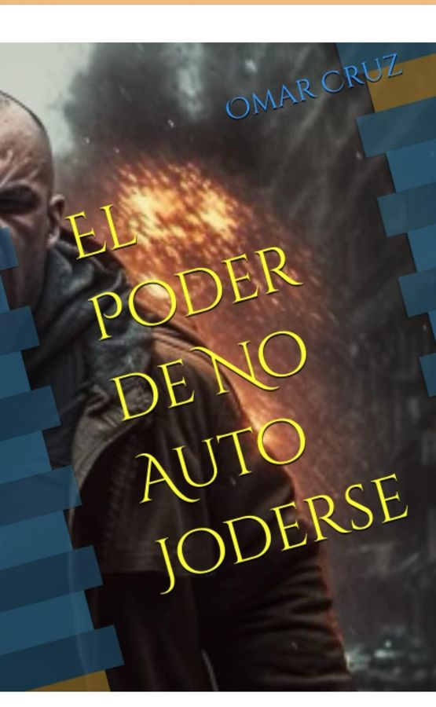
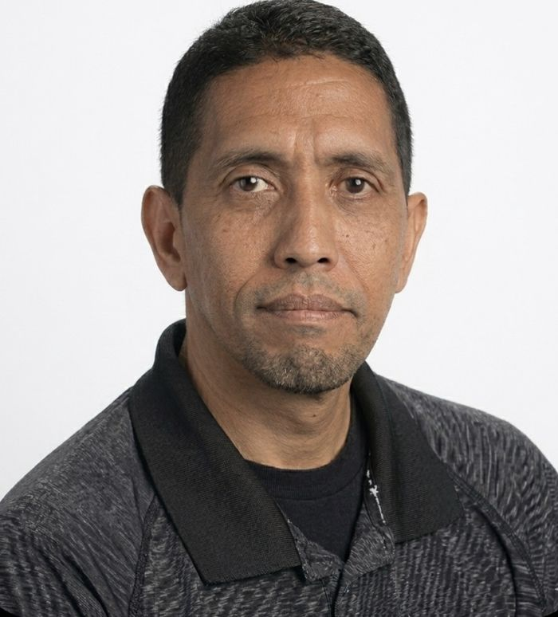

El que servía en silencio
Postear tu relación con Dios no te hace más cristiano: servirle e imitar a Jesús en silencio es lo que realmente importa.
Ver en YouTube →Ministerio · Academia Bíblica · Libros

Todo el contenido cristiano de Omar Cruz Padilla en un solo lugar: cuentos en video, escuelas bíblicas online en español, sus libros y charlas para iglesias y eventos.
Ver los cuentos Estudiar la Biblia«Lámpara es a mis pies tu palabra, y lumbrera a mi camino.»
SALMO 119:105Cuentos fotográficos construidos sobre las frases originales de Omar Cruz Padilla: historias de fe, familia y vida real que cierran con la frase y su tarjeta de autor. Nuevos cuentos en el canal @ConsomeParaElAlma.
Postear tu relación con Dios no te hace más cristiano: servirle e imitar a Jesús en silencio es lo que realmente importa.
Ver en YouTube →Un cuento de la serie Consomé para el Alma, sobre una frase original de Omar Cruz Padilla.
Ver en YouTube →Los hombres no se miden por lo que aparentan, sino cuando no son marionetas del mundo.
Ver en YouTube →Un homenaje a la mujer: el verdadero sexo fuerte, contado en un cuento de la serie.
Ver en YouTube →Dios creó al hombre primero como borrador… y de ahí salió su obra maestra. Un cuento con humor y verdad.
Ver en YouTube →Un cuento de la serie Consomé para el Alma, sobre una frase original de Omar Cruz Padilla.
Ver en YouTube →Un cuento de la serie Consomé para el Alma, sobre una frase original de Omar Cruz Padilla.
Ver en YouTube →📺 El canal completo: oraciones, historias bíblicas y un cuento nuevo tras otro.
Ir al canal de YouTubeFormación bíblica grabada, con narración profesional, a tu ritmo y para siempre: sin clases en vivo ni mensualidades. Al completar tu escuela y su proyecto final recibes tu certificado privado de culminación de la Academia, firmado por el director.
Homilética completa en video: 31 lecciones, del texto al púlpito, con proyecto final y diploma. Aprende a preparar y predicar mensajes fieles y claros.
Certificado privado de culminación de la Academia del Profe Omar. No es una licencia estatal ni una ordenación ministerial.
41 lecciones en video + proyecto final: acompaña, escucha y aconseja desde la Palabra, con fundamento bíblico y herramientas prácticas para el ministerio.
Certificado privado de culminación de la Academia del Profe Omar. No es una licencia estatal ni una ordenación ministerial.
35 lecciones ya producidas para ministros de alabanza y equipos de adoración. La inscripción abre muy pronto.
Formación para servir como capellán voluntario en hospitales, cárceles, hospicios y comunidad: presencia, escucha y palabra de consuelo en los momentos más difíciles. En producción.
La Academia vende formación y preparación; la credencial oficial de cada institución es un trámite aparte de cada entidad.
Frases originales y reflexiones sin anestesia: los libros de donde nacen los cuentos y las frases diarias.

Las frases originales de Omar Cruz Padilla: directas, reales y con la amargura justa para despertar. El libro oficial de la página Frases del Alma Club.
Comprar en Amazon
Un llamado claro a dejar de sabotearte: decisiones, hábitos y fe práctica para salir del ciclo de autoengaño.
Comprar en AmazonLa página oficial del libro «Frases para el alma»: cada día una frase original de Omar Cruz Padilla con su sello — en póster, video largo y video corto — para leer, guardar y compartir.
Seguir la página en Facebook
Omar Cruz Padilla está disponible para charlas y presentaciones en iglesias, eventos, librerías y donde sea: predicación, motivación desde la fe y presentación de sus libros, siempre en español.
📲 Escríbeme por WhatsApp: 240-659-0154